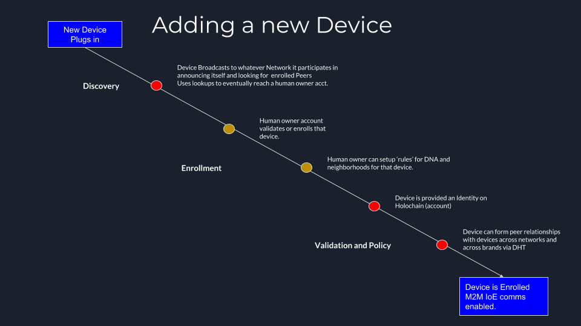
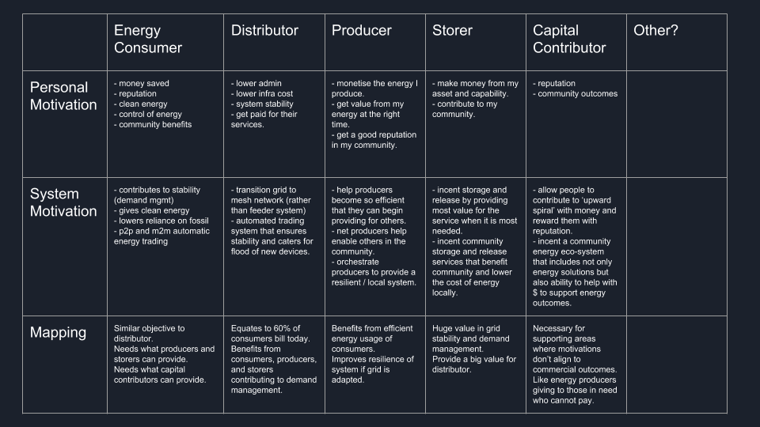
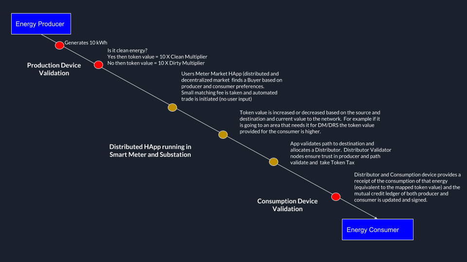

Welcome to the Internet of Energy
Introduction
Welcome to the Internet of Energy (IoE) Book. This book aims to give you an understanding of what the IoE is, how it works, what it comprises of, and where you can apply it to your business or device. It also gives you the tools and knowledge to begin designing, integrating, and building solutions on it.
A quick note about Energy transformation
Energy systems in every country in the world are undergoing massive transformation. The grids we rely on and the power that flows through them historically and typically has flowed one way with you and I as consumers of energy, being fed by large centralized power generation plants. This architecture however is under attack. Rooftop solar, home battery storage, Electric Vehicles, and Intelligent 'IoT' devices are flooding onto the system. These services are democratising the grid and with IoT becoming pervasive we now have the ability to create an eco-system where any energy consuming, storing, monitoring, or generating device or system can connect, co-ordinate, orchestrate, and/or transact energy value. It is still early days in this transformation and our grid providers are struggling to keep up, but it is happening rapidly and the industry as a whole is trying to 'upgrade the airplane mid flight' from a top-down, one way energy feeder systems, into a full-mesh network.
The Internet of Energy
The internet of energy is using technology to prepare for that outcome by leveraging device intelligence at the top, middle and extreme edges to create an intelligent energy system.
A common and open protocol and language that enables any energy consuming, generating, storing, or monitoring devices to securely, privately, communicate, disseminate and share value in a way that will scale beyond any other alternative offering or architecture.
The IoE aims to become a standard analogous to the TCP/IP protocol for the information internet in that it is a de-facto protocol that is used across devices, brands, architectures, states, countries..
The only way that a solution can achieve that is if it is built upon some of the same principles including the requirements that it is:
- Open source and free to use for anyone to adopt and use (not proprietary and closed like ALL other solutions in the market).
- It is simple and elegant and provides a common 'language' that works across any device type, brand, manufacturer, businesses, and geography.
- Is scalable, lightweight, modular, and community driven.
The TCP/IP standard has changed the way we communicate and consume information around the world and has transformed the world into one global collaborative community. It has opened new products, models and partnerships for businesses, individuals and communities alike that where previously unimaginable.
We hope with your help that the IoE will do the same thing for Energy.
How exactly can I use it?
The IoE protocol is a set of software modules that can be embedded into any 'Energy Device'. That device may be a solar panel, a battery, an air-conditioner, a building-management-system, fridge, fan, smart plug, smart meter, substation infrastructure, wind farm or more. It is relevant for anything in the energy system that consumes, produces, stores, or monitors power.
With the software embedded into your device your device can now securely communicate with any other device in the ecosystem regardless of the brand, type, or location. Your device can now speak a common language and trade a common currency. It can; discover, communicate, form relationships and/or trade value with others in the system.
It also provides you with the tools to build 'Applications' that take advantage of these new capabilities.
What is possible when everyone speaks a common language?
A common language for communications alone is not enough. What provides value for all of us is how we use that language and what we communicate through it. In the Internet of information this value is provided through Applications. The same is true for the IoE and in the IoE we call these Smart Energy Apps.
Smart Energy Apps are applications that any 'agent' in the IoE can run that allow that device to orchestrate, co-ordinate, trade value, or adjust energy usage.
Anyone can use the IoE software to develop 'Smart Energy Apps' that are relevant to their needs but here are some examples that RedGrid have created to give you a feel for what is possible:
-
Demand Management App this app enables an a single or group of air conditioners to react and respond as a group to energy market conditions. this app provides a signal to devices about market conditions as well as what is happening in the community of devices and based on that information shifts or moves its energy usage. This saves money, improves device life and benefits grid stability as devices reduce their usage (in concert) when demands on the system are too high.
-
Local Intelligent agent this app allows energy managers to build a 'personality' for the energy assets and spaces they manage. Using 'Private/Distributed' Machine Learning (ML) capability it uses data from energy devices (like air conditioners) to model a space. An example of how this works is for an air conditioner in a room. Through the IoE Protocol and the Local Intelligent Agent Application the air conditioner data feeds temperature, humidity, on/off information, make/model, location, and timing information into a Machine Learning model that enables system managers to get a view of the usage routine of the device, the set points relevant for the device, the rate at which the space heats or cools, the conditions of that location, estimates around asset life, how that space performs compared to other similar spaces and more.
-
Community and Macro Intelligence this app builds upon the Local Intelligent Agent app allowing 'agents' to share their own data into a private homomorphically encrypted global ML model that will learn and share global level macro energy trend data. This creates a global energy view of trends and changes that is relevant for energy communities, regions, states, countries, regulators, operators, businesses and individuals. It provides a global macro view of insights without individual participants disclosing or risking their privacy.
-
Community Orchestration this app is for energy managers who look after multiple distributed energy assets in a portfolio. It provides a front end application but is primarily aimed to be automatic and transparent. It enables participating devices to orchestrate and react in co-ordination in order to reduce costs and be more efficient. It optimiseS energy use within the energy managers system between all devices including energy consumption, generation, and storage devices. The front end application additionally provides immediate insight and awareness at the extreme edges of the network for energy managers.
-
Adaptive Energy Trading this app provides energy managers and communities with a local 'market' for energy trading that is dynamic and self adjusting. It incorporates feeds from relevant 'top level' energy markets but also incorporates changing local market conditions (i.e. if a new rooftop solar systems, batteries, or consumption device is added to the IoE community the AET will incorporate it). Through this adaptive view the Application creates a dynamic 'exchange' and 'price' for buyers and sellers of energy resources to trade on for that community. It is similar in a way to an 'network router' in that it dynamically adjusts and optimises according to new and changing actors in the system. Like a network router it provides these services in a transparent and automated fashion. It will trade, orchestrate and procure energy on your behalf automatically according to the rules and policies you set (e.g. procure at lowest price, procure only clean energy sources..).
-
Donation Token this app provides a 'cross' geography capability for the trading of energy value. It provides the 'escrow/reserve' account and relevant service framework so that energy 'value' can be donated from agent->provider->provider->agent across geographical boundaries. This service is something we have used and demonstrated for example between two utilities in Germany and Bangladesh where it was used to enable a customer of the German Utility to donate 'surplus' solar value they create to a specific 'recipient' in Bangladesh.
These are just a few examples of IoE Applications that we are building but we hope and aim to provide the open source tools so that anyone around the world can create and invent their own.
The IoE is built on Holochain
Holochain is a pattern for truly distributed peer to peer applications and is the service that the IoE is built upon. Our IoE Applications are also hosted on the 'Holo' service which is a distributed hosting platform also built upon the Holochain architecture.
We selected Holochain as it is; lightweight, fast, scalable, does not require global consensus, or energy hungry mining and unlike other Blockchain platform in the Energy space is TRULY open source.
Much more than that though, we selected Holochain because of its 'agent based' architecture. This feature gives significant advantages over centralised or existing blockchain distributed solutions and at a technical level is the ONLY model that we have found can address the 'distributed energy' market.
An intelligent energy system requires adaptability, nuance, and speed at the network edges.
It also requires an extremely light weight software that is robust and can be embedded into any device easily and without compromising security, privacy and trust.
Blockchain and centralised solutions cannot and will not address this need.
The agent based model differs from other architectures as it allows devices to
- tailor their behaviour/reactions to their specific circumstances
- choose to share or not share private data about their circumstances
- create and apply a unique 'agent' perspective on the community and situation.
- it is fractal in the sense that agents can form and interact in direct peer to peer relationships and communities dynamically
- it is anti fragile in that it grows stronger rather than weaker with scale and complexity
- in addition it provides all the same features and benefits of traditional blockchain with none of the constraints.
The IoE in alignment with Holochain is written first in the Rust language. Rust is a great language for IoT and is great for producing secure and robust code.
All these features are uniquely filled by Holochain and Holo and they are critical features that the Energy system needs but current distributed technology architectures cannot provide.
Understanding Holochain
Holochain is an engine that runs distributed apps. It uses an open source software library that provides a way for businesses, communities, and other groups to build and run applications which are hosted and validated by the "users" themselves. Doing so provides a superior level of agency and autonomy over heavy reliance on the so-called "cloud" and other third parties.
Holochain provides a cross-platform framework for the development and execution of distributed applications. By running Holochain applications (Happs), "users" cease to merely "use". They become "user-participants" who are also responsible for hosting and validating the network's data. Applications can be developed utilizing any of the major operating systems, and run on virtually any device. As (Happs) can be very lightweight they are perfect for IoT devices.
The many benefits and opportunities associated with peer-to-peer dApps (e.g. offloaded server costs, elimination of single points of failure, and flexible governance structures) are made available, and often amplified through the Holochain hApp architecture, on desktops, laptops, Mobile and IoT devices.
It is best to refer to Holochain's own reference material for frequently asked questions and the Developers guide book to take a deeper dive into the archetecture of the Holochain ecosystem
Developers
RUST Language
Both the IoE and Holochain are written in the Rust language and compiled to Web Assembly. The Rust programming language helps you write faster, more reliable software. High-level ergonomics and low-level control are often at odds in programming language design; Rust challenges that conflict. Through balancing powerful technical capacity and a great developer experience, Rust gives you the option to control low-level details (such as memory usage) without all the hassle traditionally associated with such control.
Although not essential developers looking to build on the IoE Protocol should consider familiarising with Rust through the following resources:
https://doc.rust-lang.org/book/ch00-00-introduction.html
https://rust-embedded.github.io/book/intro/index.html
Holochain Developer Kits
The IoE is built upon Holochain concepts and patterns. Holochain presents an entirely new and unique model for designing and building applications so we recommend that any developer wishing to build an IoE solution at least briefly familiarize themselves with the Holochain guide:
https://developer.holochain.org/
Other Platforms
The Holochain system is written in Rust but runs on Web Assembly (WASM). Multiple languages compile to WASM and for this reason the Holochain team anticipate that Holochain Development Kits (HDKs) will be written for various language standards.
We envisage the same for the IoE and hope that Developer Kits will be created for all popular IoT languages. If you are interested in developing a IoE HDK for a particular language in the future get in touch with us at www.redgrid.io/
The IoE structure
Holochain services and therefore the IoE Protocol are built on what are called 'Zome' files. These can be considered like Modules and combine to form a 'DNA' file for the device and its applications that define its actions.
The IoE is simply a group of 'Zome' files with functions and formats that when added to your device allow it to be part of the IoE community and standard.
Contributing
All codebase for the IoE including this MDBook can be found on the 'Internet of Energy' Github repository found at:
https://github.com/redgridone/Holo-InternetofEnergy-MDBook.git
GitHub provides built-in version control, making it easy for anyone to contribute, propose, track and merge changes, and we encourage anyone to do so and would love your help and collaboration in creating this open platform that will transform the energy system.
What to contribute
For a current list of open documentation issues, check out the repository at:
https://github.com/redgridone/Holo-InternetofEnergy-MDBook
For a current list of open code issues, check out the repository at:
https://github.com/redgridone/Holo-InternetofEnergy-MDBook
Licensing
Copyright (C) 2019, Internet of Energy Foundation
This program is free software: you can redistribute it and/or modify it under the terms of the license provided in the LICENSE file (GPLv3). This program is distributed in the hope that it will be useful, but WITHOUT ANY WARRANTY; without even the implied warranty of MERCHANTABILITY or FITNESS FOR A PARTICULAR PURPOSE.
Cryptographic Autonomy License
The Holochain community are currently developing a new license that will be called the 'Cryptographic Autonomy License'. This model will address the unique needs of truly peer-to-peer software models that are currently not addressed by GPLv3 or other license mechanisms available.
The IoE will likely leverage this structure when it becomes available.
Getting Started
Who should read this book?
Business people, Developers, Tinkerers are all accommodated in this book. Basically it is written for any person who has an idea, concept or desire to build an application that wants to control, manage or interact with an energy consuming/producing/or storing device, or a community of them.
Some development experience is an advantage but the book aims to provide a step by step guide that developers and non developers alike can follow.
Knowledge pre-requisites
Again some knowledge of RUST and Holochain is desirable but not essential.
Setup pre-requisites
The coding components of the book require that you have Holochain running on your system. Instructions for setting up are found here:
https://developer.holochain.org/
Following this book
The book is structured to first provide an overview of both conceptual components and technical configuration options within the IoE. Lower level details will be found in API documentation portals separately.
The first sections aim to provide a baseline understanding to get you going, but for the more adventurous there is also a section 6 at the end which provides a way to get your hands dirty through a sample project which builds a 'smart power plug' and IoE Application.
Planning to Build and IoE
There are three types of use cases that readers may be interested in here:
- You have an energy consuming/storing/generating device or product that you wish to enable.
- You already have a device or community of devices and wish to build an application for them on the platform.
- You may wish to build a FE Interface or Integration to an existing Device or Application.
This book provides guidance for all these scenarios.
In addition to the use cases above it is also worth noting that the IoE protocol need not only be limited to energy use cases. In fact the IoE service can be applied to any IoT device in order to enable it to be discovered and discover devices around it and communicate using a common language. With that in mind it could potentially be used by any IoT device to orchestrate and organise securely, privately and at scale.
Architecture
The IoE Architecture at a high level works as follows:

The IoE is build on three layers which are:
Your Device and Code
The top layer is your device, or user interface. This is your proprietary software that is used to control and interact with your device and will be unique to your specific device capability and blue-print.
The IoE 'Device Drivers' provide an interface specification and standard API's for interactions with this layer.
The IoE software and Smart Energy Apps
This layer is the libraries and modules that embed in your device (or interact with your device via API's) that give it an identity on the IoE and all the functionality that being part of the IoE community provides.
This is written in Rust and includes the Holochain HDK. This layer is also where the relevant Smart Energy App code is written.
This software is embedded to your device (or hosted on Holo and integrated via API) and compiled to a WASM file called DNA.
Holochain
IoE users when configured are given an immutable 'local' chain which captures and manages interactions. In addition they are provided access to 'common spaces' which are Distributed Hash Tables (DHT's). DHT's are what device communities use to communicate, share state and orchestrate. Every Holochain (and in turn every IoE) App creates its own DHT community and network based on the rules set in its DNA.
Internet of Energy Components
The IoE standard provides features and capabilities to create and connect all three layers above.

From a functions and capabilities point of view the IoE modules are categorised and built as as follows:
Note- Zomes in Holochain terms can be considered like software Libraries or Modules.
- Identity and Discovery Zomes
- Basic Device Driver Zomes
- Currency and Grammar Zomes
- Community and Relationship Zomes
The following sections describe each of these areas and the configuration elements for each.
Identity and Discovery
User stories
- as a new device when plugged in for the first time I need to discover who's near me
- as a new device when plugged in for the first time I need to be able to choose and confirm who my owner is.
- as an energy system manager I need to be alerted when a new device is plugged in to my neighbourhood
- as an energy system manager I need to be alerted when a device is removed in my neighbourhood
- as a new device when plugged in I need to be given an identity (address) on the ioe
- as an energy system manager I need the ability to transfer ownership of a device to someone new.
- as an energy system manager I need to be able to choose whether my device is public or private.
- as a device if I'm plugged in and no 'owner' is identified I need to be configured on the IoE with some basic default capabilities
Device types
- user types are:
- consumption
- generator
- storage
- monitor
Identity and discovery
this section is a critical component in the IoE eco-system. creation of a common standard for discovery and identity that works across different brands, devices, networks, software and architectures is a big challenge.
in the IoE every device and device portfolio ultimately needs a defined 'human' owner who can transfer, control, and orchestrate according to their personal policy. this owner may be a manufacturer if the purchaser doesn't wish to fulfil the function but it must also be able to be the owner too.
Peer discovery
this is an important component for devices that enables them to be seen and become part of the communities that interest them. for example when I buy and plug in a new solar panel at home I need it to; a) broadcast it's presence, b) discover who is its owner, c) and form direct P2P relationships with other devices in its neighborhood d) possibly have awareness to see when other new 'actors' enter the system for this we need a common way for 'likeminded' peers to see one another when they are nearby.
here is how we intend and will build for the discovery process to work in the IoE using the example of a new 'energy' device being purchased and plugged in by the user for the first time (note this could be an air conditioner, pool pump, washing machine, solar system, battery, or even a wind farm!):

See in the flow above that in the 'Discovery' step the device broadcasts its presence and searches for peers. Note that this will occur on whatever 'network' that device is configured to participate through from its manufacturer. For example this may be Zigbee, Lora, WiFi, 3G, 4G, 5G, GSM or other. We aim for this to be agnostic. When the device performs this search it may find, a 'human' (i.e. a mobile or web app user on the same network), or another device (like a smart meter or other system that will be configured to respond). If the device does find another 'machine' using the IoE in its network it will be able to perform a lookup that will find that devices 'human' owner address. That relevant human owner address will be notified and can begin the enrollment process.
The benefit here is that device can use other devices as a proxy for reaching the 'human' owner, and similarly proxy relationships can be established to enable P2P relationships across networks.
Network Discovery Techniques for IoE
there are several technologies that can help with this functionality. Here's a summary of some of the options:
Holochain MDNS/Bootstrap For peer discovery the Holochain service currently leverages Multicast DNS to discover peers on a local network. There is also a bootstrap server built into the command line tools however this is more relevant for our IoT examples.
Bootstrap currently the Holochain command line tools include the NPM Bootstrap server service. This can be used as a mechanism for peer discovery and P2P networking. Doubtful that this will be the correct solution for IoT and InternetOfEnergy purposes.
LibP2P currently still being configured for RUST but in my mind this is the best solution as the networking layer for the IoE. this service we propose will provide find/fetch/authenticate services to IoE devices and allow them to 'enroll' and become part of the Holochain IoE services.
Hyperswarm a popular peer discovery protocol is Hyperswarm. Hyperswarm could be a good choice as it can holepunch NAT so is more effective and has more reach than DAT P2P discovery protocols. It uses a Kademlia DHT to track peers and arrange connections. Hyperswarm provides a mechanism for discovering peers and establishing reliable connections. this is exactly the function we need.
DAT DAT is another option that is being replaced by Hyperswarm. for our need under a DAT solution a newly connected energy device will broadcast the DAT's it is interested in to the local network. that interesting list may differ for each device but concept is that on initial power up the device will be preconfigured to broadcast to an 'owner DAT' connection which will find and form a connection with any nearby owner devices. This owner device is the energy manager or user portal. once connected the owner will verify and add the device to his portfolio and the solution will also push a list of other interesting DAT's that the owner has deemed relevant/necessary.
ssb-tunneling ssb-tunnels are an interesting way to enhance P2P network reach by connecting peers via proxies.. for example if A is connected to B and C is connected to B, an ssb-tunnel can be used through B to connect A and C. ssb-tunneling is useful to mention here as in many cases smart meters and other energy devices (rural areas ect) in IoT a device A will have an unstable IP connection. using this tech can get around that as A can make a more stable long term connection with B which is close by and then use it as a portal. very useful for mesh networking.
this will likely be used heavily in the IoE discovery process to extend reach and create mesh networks and networks or networks.
CRUST - Connections in RUST CRUST is a way to create reliable P2P connections in RUST with NAT traversal. CRUST is a really interesting option for us here as it not only performs a discovery but can be pre-configured with other rules to discover other devices. for example when the device is plugged in it sends a beacon on the network to find local peers (similar to the broadcast above with DAT). under our scenario this beacon would find the 'energy manager' application and form a relationship (same as DAT process above). Then it will find other peers that may be preconfigured by the OEM.. (i.e. perhaps a direct relationship with a collaborating company that enables devices to immediately form a relationship.)
CRUST is secure and reliable, it supports UDP and TCP hole-punching so discovery has reach. everything is encrypted. It has secure serialization so prevents MITM attacks.
Identity
every machine that is added or participating in the Internet of Energy needs an Identity. identity is a great dinner party topic. for example what is identity? Is it me as an assembly of cells and parts? or does each organ/cell/atom in my body also have a unique identity? in the world of the Internet of Energy every machine/sensor/or front end user running the code is provided with a unique identity with the caveat that each machine/sensor must have a human owner. giving each machine a unique identity is critical as it gives us the ability to create direct P2P, and M2M relationships between devices so long as those relationships operate within the rules and boundaries set by a human owner.
the creation of an addressable Identity for each device enrolling into the IoE is not done at the manufacturer (in most cases). Rather it is performed only after that device has identified and established a relationship with a 'human' owner. Only once that is validated will the 'device' be provided through DKPI with a public and private keypair for Holochain communication.

Address
the mechanics of the IoE system are such that every device is given a Holochain address. the service will work in such a way that the device (depending on its type and function) will not be given this 'address' out of the box (from the OEM).. Instead the device will go through the discovery process above at which point a 'human' owner will be verified. once identified the 'machine' will be generated and provided with a public and private key-pair on Holochain.
Libsodium will be used for key derivation for agents after they boot and are validated to have a 'human' owner.
but identity in the IoE is more than just an address. In a system where every 'machine' is an agent as it is in the IoE then every machine can have an Identity. To have an identity means that you have a view of 'what and how' others think about the world as well as a view of 'what and how' others think about you.
this means that much more than an address, identity means that every 'agent' or machine in the system must have some metrics by which they measure others and by which they are measured.
Reputation
For this reason 'reputation' will be an important attribute of the Identity stack in the IoE. Reputation is a matter of perspective so in the tech design each energy 'agent' needs to determine what constitutes a good or bad actor/reputation. This will be determined by the devices human owner (as identified in discovery).
through the human to device enrolment process therefore it is important that the general principles, values, and policy of that devices behaviour are set. not all user will be wanting to engage however so similarly it's important that the device itself be given a 'factory default' way of behaving.
these settings will provide a policy framework that will define the agents behaviour ongoing and also the relationships that it forms.
Identity Design
IoE will use DKPI to unify ownership of devices in a porfolio to a human. DKPI allows also the ability for the human owner to revoke and establish keys. we can also to a M of N signing model for ownership that allows multi signed key management of an energy portfolio. This is critical for large enterprises.
DKPI is useful for the IoE in the following contexts:
- create entries and have them signed and vouched for by other DPKI keyholders.
- discover other user-controlled identity services.
- choose to delegate public-facing identity services to a provider, store identity information in private entries on your own your own DPKI chain for selective release, or both!
- link signed claims from third parties authenticating aspects of your identity to create a whole private or provider-managed store of records about you.
Configuration
Basic Energy Device Drivers
User stories
- as a device I monitor the things that I can do. I need the tools to create an api interface that allows me to communicate these things to and from the IoE.
- as a device I control certain things that I can do. I need the tools to create an api interface that allows me to communicate these things to and from the IoE.
- as a device I need a method to ensure that my transactions are trustworthy.
- as a device I need an API into the IoE that that is written in my language.
Device types
- user types are:
- consumption
- generator
- storage
- monitor
Conceptual
Configuration
Grammar and Currency
Energy is one of the most important elements of our post modern industrial age. The practical uses for energy are almost limitless and far exceed that of anything else on the planet. The use of energy has made it possible to overcome obsticles and scarcities that throughout history have impeded the development and progress of humanity. Energy, more than any other element, or resource defines the wealth of nations. It plays a major role in geo-politics and wars. It has radically altered the world in which we live. We as a species have become utterly dependant upon energy. We depend upon it for our communications, our transport, our food and water, our clothing and technology. The ability to control the production, distribution and consumption of energy is fundamental to every person on the planet. It is even fundamental to the management of our environment and the natural world upon which all life depends. Yet control of this precious resource remains beyond the reach of almost everyone.
The currency that we use in our every day life lacks the intelligence to properly measure the lifecycle of energy. It is a tool of trade that does not carry any data beyond a single unit of measure. As a result, it is well nigh impossible for a person to develop a proper awareness of the energy being consumed, to understand how it was created and distributed; What effort was required; How much each step of this lifecycle cost or even to measure its impact on the environment. Overcoming this lack of transparency is key to being able to effect change. Change begins with awareness. If you cannot monitor something, you cannot measure it. If you cannot measure it, you cannot control or change it.
Next steps:
- Discuss currencies that carry data and provide traceability
- Discuss applications that can pattern match the currency data and do useful things (Orchestration, highlite bottlenecks, identify wastage, map distribution)
- Discuss smart contracts that use the integrity of the curency data for proper energy production and supply chain managemnt
- Discuss governance for the issuance of energy currency (As credit) and its convertability -- Setting its value to outcomes in (KwH) so that the value of energy credit goes up as efficency increases. (reward good outcomes) -- Discuss governance for the issuance of credit -- Discuss the possibility of a ranking system influencing creditworthiness. (Encourage good behavior) -- Credit may be given for reducing consumption during peak demand. Smart contracts can be used to distribute the credit between producers and transmission.
the transformation we need to unlock with the currency design is that we need to change peoples relationship with energy. we need to motivate and incentivize an understanding that energy is not yours... it's not something you buy, sell without consideration. energy is a property of the commons. how you I use energy in my world affects you and how you use energy in your world affects me. we need to introduce a system that promotes behaviour beyond just buying and selling energy.. that instead promotes behaviour with that energy that benefits everyone.
for example the grid stability relies on people making deliberate decisions not to use certain assets or change the way in which they use them.
Our currency design needs to make these things visible and accountable.
User stories
- as a device I need a mutual credit currency that enables me to trade value with others in the system
- I need that currency to work across device, brand, architectural, and geographical boundaries and is not dependent on retailer or provider.
- as a device that generates energy I need to be able to issue the currency into existence.
- as a device that generates energy I need to be rewarded if the energy I generate is clean.
- as a device that consumes energy I need to see whether the energy I procure is clean or dirty.
- as a device that consumes energy I should be rewarded if the energy I procure is clean.
- as a device that stores energy I should be rewarded for storing and releasing energy that benefits the entire network.
- as a device I need a model that ensures security and privacy of my energy transactions.
- as an app developer/provider I need to be rewarded in a currency for the value I provide.
- as a device that generates energy I need to be able to 'cash out' or 'cash in'.
currency design Architecture
- base currency 'mutual credit' kWh
- participants:
- generators (solar systems, wind farms, etc)
- they are the issuers and create tokens into existence
- they can also include dirty energy producers
- there needs to be a reputation and some specific attributes tied to the currency created .. i.e is it from a dirty source, clean, is it locally shared/shareable..??
- consumers (ac's, pool pumps, any device)
- they are the ones who consume the tokens.. they can set their rules for consumption.. i.e. clean only etc.
- storers (batteries, ev's)
- may or may not be another class but they do have some unique power to alter flows by slowing down or changing the demand/supply dynamic to benefit or disadvantage the system.
- operators (poles and wires operators)
- they monitor the system.. they are like the nanny watching over it.
- they provide a service that keeps us all safe so need some sort of reward build in.
- humans
- the humans need to be rewarded for good energy behaviour..
- they need to be able to reflect their energy 'principles and values' through their devices and those views need to be visible to their communities.
- they need to be able to 'off-ramp' easily into traditional world (cash out) etc.
- generators (solar systems, wind farms, etc)
we should try to map the design to the design of Holofuel as it is the same in many ways.
to do:
- list unique characteristics of the energy flow and needs
- then map a currency approach (token, reputation, incentive, etc) to address each in design
- build it.
Objectives for an energy currency
a currency for energy is much more than just a measure of kWh transactions or trading of tokens that represent kWh's and nothing else. to effect and accelerate the real transformation in the energy system toward a clean, sustainable and equitable model we require a much more focussed and targeted currency.
Every currency design needs an objective. What is it trying to achieve? For the IoE currency the transformation we wish to unlock aims to alter the way people relate with energy. we need to motivate and incentivize an understanding that energy is not yours... it's not ALWAYS something you buy, sell without consideration. energy is most often a property of the commons. Perhaps in this day and age rather than being a commercial product it is a human right???
regardless your view on the statement above the reality is that the way our grid and energy system is architected today it is true that how I use energy in my world affects you and how you use energy in your world affects me.
With this in mind we need to create a currency and system that promotes behaviour beyond just buying and selling energy for personal benefit.. rather we need a system that promotes positive community behaviour.
the energy grid is very dynamic and becoming moreso. From a technical perspective it relies on demand and supply being in local balance. This was reasonably easy in feeder based system of the past, but today with the tsunami of rooftop solar generation, batteries storage, and increasing energy consumption devices flooding to the system the need to create currency models that incentivize community minded behaviour and prefer renewables is paramount.
The IoE currency design is unique in the industry as it measures these things and makes them visible.
The IoE currency has five main objectives:
- to provide a mechanism for energy 'value' trading that works P2P, M2M across businesses, manufacturers, device types, and geographical boundaries.
- provide a currency that rewards those who use clean energy efficiently.
- provide a currency that rewards those who give more to the right places than they take.
- provides a system that sends the energy produced by those with more than they need to those who want/need clean energy but can't access it (helping to prop these people up so they can do the same for others).
- rewards clean energy production/consumption and discourages dirty energy sources or consumption.
- rewards local energy resilience (i.e. encourages and rewards a more localised/distributed energy system).
Introduction
Baseline Measure
The baseline measure for energy transfer is kWh. However a currency that measures and tracks kWh's is not enough to change behaviour. We need to make visible other characteristics that are important to achieve the goals above. These include:

Participants and their motivations

Distributors
Distributors operate the grid. They need to be paid for that service so there needs to be a 'tax' offered to them for each transaction that traverses their infrastructure. The design will also involve that substations, meters and other grid infrastructure is fitted with IoE monitoring equipment that will 'validate' kWh trading claims.
From the IoE motivation we want to encourage this group to transition their infrastructure from a feeder system to a full mesh system as fast as possible.
From their perspective the distributor is interested in cheaply being able to manage dynamic/unpredictable demand, lower overhead, and system resilience.
Energy Consumers
End users need to be rewarded for using energy efficiently. They also need to be rewarded to using energy in ways that benefits the local and global system stability.
From their perspective the end customer is interested in saving money, having control of their energy environment (reduce reliance). They are also somewhat interested in clean energy outcomes as well as community reputation.
Energy Producers
Producers want to monetise their service, either through saving money for themselves or making money through selling what they produce. This includes good actors (clean energy producers) and fossil producers alike. They wish to maximise the value they get from this sale.
From our perspective we want the same for the clean energy producers only, and we want it minimized for dirty producers. But we want that energy to go to the right place which will usually not be the highest bidder. The currency therefore needs to provide a value weighting that matches power to a need rather than power to the highest $ bidder
Energy Storers
Same as above, these actors will be increasingly more important in our design as they are critical to the stability and timeliness of power provided. These users as above wish to monetise the service they can provide. Not only the power they distribute as an asset but also the time in which they release it.
From our perspective we want to encourage behaviour that has system benefits here and stores and releases energy at the times when it is most needed. The currency value these actors get from that service needs to reflect that incentive.
Similarly the market value for them needs to reflect events that are happening like demand response or local stability etc.
Capital contributors
There are parties that can contribute to our outcomes but perhaps not necessarily with energy trading directly. These individuals are interested mainly for reputational reasons.
Our design needs a way to incorporate these contributors and feed their contributions into the system. A possible mechanism for this is that contributions could be used to buy and contribute 'credits' into the system that might be used to 'offset' or subsidize certain user needs (community solar projects etc).
Currency Design
The currency will be based upon kWh but will need to adjust to reflect all the motivations and incentives above so needs to be called something else.
The proposal is that we call it one of the following:
- Gretacoin (GTC)
- Local Power Credits (LPC)
- Tility (TLT)
- Community Power Credits (CPC)
The currency will be based on a mutual credit concept.
issuers - energy producers and storers will issue new currency into existence. Their issuance if exported must be verified by 'distributor validator nodes' who will take a transaction fee for doing so. durability - the currency will exist until 'consumed', 'stored' or 'cashed out'. There will also be some degradation if the currency needs to traverse grid infrastructure as distributor will take a 'transaction fee'. The IoE service therefore needs to organise communities into 'automomous organisation zones', 'localles', or 'namespaces' that are hierarchically arranged and linked. This will operate in a similar way to 'internet routing' in which local routing and markets are managed but have dynamic interface relationships with others. portability - the currency will be portable and can be cashed out by humans at any time. The cash out 'rate' needs to reflect local conditions and markets for that user. It is portable in the sense that it can be 'consumed' (as real energy consumption) by any other device in the system, or 'burned' and cashed out by a human. divisibility - the system will use mutual credit so micro transactions are easy to achieve. uniformity - kWh (real energy usage) is the basis for the currency value but will be influenced by other factors (see above and below) as the solution flows. supply - generators will issue and create the currency into existence. This is not a supply that we will control but it must be validated and trustworthy. the more important measure that will need to be monitored is not the total volume of tokens in circulation but the balance between supply and demand of those. acceptability - the actual token should be dynamically and automatically traded as much as possible within the energy systems. It therefore should be as transparent to end users as possible. Having said that cash out options must be prevalent and mapped to stable and 'trustworthy' oracles.
The currency flows
The following diagram describes the life of a flow from producer to consumer under the currency. In the last step described we will include a 'reputation' multiplier on the token value for that particular user/consumer purchasing. If they have a history of behaving well with DRS/DM outcomes then the token value they receive is more.

Configuration
Community and Relationships
User stories
- as an energy system manager I need to be able to setup my devices into Communities groups
- as an energy system manager I need to be able to setup these groups with varying degrees of access, control and visibility.
- as an energy system manager I need to be able to 'enroll' my device communities into smart energy apps from an app store.
- as an energy system manager I need to be able to see other communities around me
- as an energy system manager I need to be able to see other 'public' devices around me
- as an energy system manager I need to be alerted if new devices arrive.
- as a device if there is no 'active' owner I need some default rules for detecting new devices near me and how and if engage with them.
- as an energy system manager I need the ability to setup 'rules' for my communities that automate how and when they setup relationships.
Conceptual
Configuration
IoE Application Design
User stories
- freemium app
- subscription app
Let's build a smart plug
This section provides a step by step guide to building a 'smart plug' that will leverage the Internet of Energy and a 'market demand management app' to react to peaks in the external market.
When the external market price is 'peaking' the plug will switch off for that peak period. The app has a front end so the user can set the 'peak' value at which this behaviour occurs.. (i.e. 20% over average price, 30%...).
As well as the user helping grid stability through this app the running of this plug will also begin to 'earn' the user IoECURRENCY .